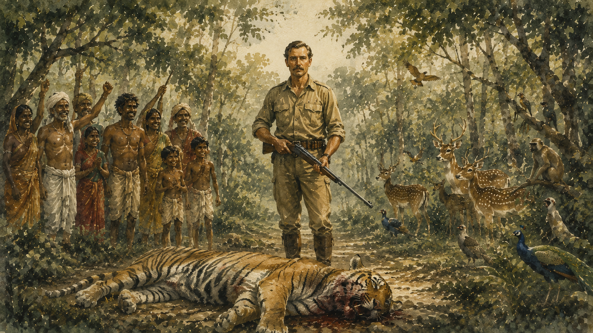

Reflections on Literature, Culture, Place & Space
A personal repository of thoughts, musings, and critical essays exploring the intersections of environment, geography, and literary culture.


Reflections
About Dr. Nirmalendu Maiti
Department of English · Mahishadal Raj College
I am an educator in the Department of English at Mahishadal Raj College (Affiliated to Vidyasagar University, West Bengal). My scholarly inquiries gravitate around the intersections of postcolonial studies, environmental humanities, tribal encounters, and spatial studies.
Through my teaching and writing, I strive to examine how literature records the delicate dialogue between human communities, contested territories, and changing environmental landscapes.
Research Landscape
Core areas of critical investigation spanning spatial theory and environmental literature.
Ecocriticism
Exploring representation of different eco-geographical spaces in postcolonial fiction.
Spatial Humanities
Analysing different kinds of environmental, geographical, and cultural spaces in literary imagination
Tribal Encounters & Postcoloniality
Examining indigenous lore, subaltern silences, and the historical friction between imperial forestry and forest dwellers.